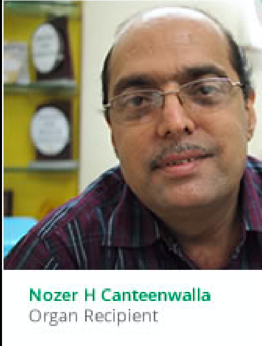

SUCCESSFUL STORIES
Name: Nozer H Canteenwalla Age at interview : 48 years Sex : Male Background: For more than eight years, Nozer H Canteenwalla endured dialysis treatments three times a week, as he was suffering from end-stage renal disease (ESRD). See how he was given a second chance at life after he received a cadaver organ transplant.
When did you first realize that you were not well?
was diagnosed with polycystic kidney disorder around June 2003. Actually, it is a hereditary disease from my mother’s side. I lost my grandmother to it and even my mother underwent dialysis for almost two years. As it was a hereditary problem, I underwent a test, which was positive. However, the kidneys were functioning properly and hence there was nothing to worry. But gradually, as I was unable to take proper care of my kidneys, the condition of the kidneys deteriorated when I was just 38. One day I came from office and realized that I had not used the bathroom the whole day. So I got my blood tests done and came to know that my kidneys had given up completely. As it was a family condition, I knew what to expect.
What was the initial prognosis by the doctor?
I had an infection in my kidneys and the doctor to whom I had gone first was not able to treat it. Due to this, the condition of the kidneys deteriorated even more. Actually, if the kidneys function normally, one could lead a healthy life for 30-40 years even if one has polycystic kidneys. But I had a severe infection due to eating out often. Also, the doctor could not control the infection and I was directly put on dialysis. I took a discharge from that hospital and consulted Dr. Bharat Shah of Narmada Kidney Foundation.What was the treatment suggested to you by the doctor initially?
Dr. Bharat Shah was able to bring down the creatinine level of the kidney and thus control it’s functioning through proper diet and just a few medicines.
BROWSE BY FOCUS AREA
- Education (219)
- Children (189)
- Health (102)
- Poverty (103)
- Environment (76)
- Economic Development (71)
- Human Rights (37)
- Gender & Equality (58)
- Technology (22)
- Microfinance (23)
- Arts (31)
- Disaster Relief (7)